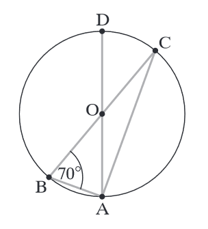

Matura 2017 listopad
Na tej znajdują się rozwiązania zadań matury próbnej
organizowanej przez Wydawnictwo Operon 22 listopada 2017.
Liczba \(\log_2\frac{1}{\sqrt{8}}\) jest równa:
A.\( -\frac{3}{2} \)
B.\( \frac{3}{2} \)
C.\( \frac{1}{3} \)
D.\( -\frac{1}{3} \)
A
Liczba \(a=\frac{14\sqrt{2}}{\sqrt{2}-3}\) należy do przedziału:
A.\( (-\infty ,-13) \)
B.\( \langle -13,-12) \)
C.\( (12,13\rangle \)
D.\( (13,+\infty ) \)
B
Reszta z dzielenia liczby naturalnej \(x\) przez \(9\) jest równa \(7\). Reszta z
dzielenia kwadratu tej liczby przez \(9\) jest równa:
A.\( 2 \)
B.\( 4 \)
C.\( 6 \)
D.\( 8 \)
B
Prosta \(l\) przechodzi przez punkty \(A=(6,-7), B=(-10,3)\). Prosta \(k\) jest
symetralną odcinka \(AB\). Współczynnik kierunkowy prostej \(k\) jest równy:
A.\( -\frac{8}{5} \)
B.\( \frac{8}{5} \)
C.\( \frac{5}{8} \)
D.\( -\frac{5}{8} \)
B
Dany jest ciąg \((a_n)\) o wyrazie ogólnym \(a_n=\frac{2n+1}{n+3}\). Liczby
\(a_3,a_5\) są wyrazami tego ciągu, a liczby \((a_3,x,a_5)\) tworzą ciąg arytmetyczny. Liczba \(x\)
jest równa:
A.\( x=\frac{61}{48} \)
B.\( x=\frac{61}{96} \)
C.\( x=\frac{69}{96} \)
D.\( x=\frac{69}{48} \)
A
Dana jest funkcja określona wzorem \(y=x^2-4\sqrt{3}x+12\). Trzecia potęga jedynego
miejsca zerowego tej funkcji to liczba:
A.\( 8\sqrt{3} \)
B.\( 24 \)
C.\( 24\sqrt{3} \)
D.\( 12 \)
\({x_1}^3=?\)
C
Do wykresu funkcji wykładniczej \(f(x)=\left(\frac{1}{4}\right)^x\) należy punkt
A.\( A=\left(-\frac{1}{2},-2\right) \)
B.\( A=\left(-\frac{1}{2},2\right) \)
C.\( A=\left(2,\frac{1}{2}\right) \)
D.\( A=\left(2,-\frac{1}{2}\right) \)
B
Dany jest ciąg geometryczny o wyrazach różnych od \(0\). Suma siódmego i ósmego
wyrazu tego ciągu jest równa \(0\). Oznacza to, że suma tysiąca początkowych wyrazów tego ciągu jest
równa:
A.\( 1000a_1 \)
B.\( 1001a_1 \)
C.\( 10 \)
D.\( 0 \)
D
Punkty \(A,B,C,D\) należą do okręgu o środku \(O\). Jeśli kąt \(ABC\) ma miarę
\(70^\circ \), to kąt \(DAC\) ma miarę:
A.\( 70^\circ \)
B.\( 50^\circ \)
C.\( 40^\circ \)
D.\( 20^\circ \)

D
Trójkąty \(ABC\) i \(DEF\) są podobne. Obwód trójkąta \(ABC\) jest równy \(16\), a
jego pole \(12\). Pole trójkąta \(DEF\) jest równe \(60\). Zatem obwód trójkąta \(DEF\) jest równy:
A.\( 80 \)
B.\( 16\sqrt{5} \)
C.\( \frac{16\sqrt{5}}{5} \)
D.\( \frac{16}{5} \)
B
Wykres funkcji \(f(x)=(4m-2)x+k-3\) przechodzi tylko przez II i IV ćwiartkę układu
współrzędnych. Oznacza to, że:
A.\( \begin{cases} m\gt \frac{1}{2} \\ k=-3 \end{cases} \)
B.\( \begin{cases} m\lt \frac{1}{2} \\ k=-3 \end{cases} \)
C.\( \begin{cases} m\lt \frac{1}{2} \\ k=3 \end{cases} \)
D.\( \begin{cases} m\gt \frac{1}{2} \\ k=3 \end{cases} \)
C
Wzór funkcji, której wykres powstaje przez symetrię osiową względem osi \(OX\)
wykresu funkcji \(f(x)=x^2-4\), to:
A.\( f(x)=(x+4)^2 \)
B.\( f(x)=-x^2-4\ \)
C.\( f(x)=-x^2+4\ \)
D.\( f(x)=(x-4)^2 \)
C
Wyrażenie wymierne \(W=\frac{x-3}{x^2-4x+4}\) jest określone dla
A.\( x\in \mathbb{R} \)
B.\( x\in \mathbb{R}\backslash \{3\} \)
C.\( x\in \mathbb{R}\backslash \{2\} \)
D.\( x\in \mathbb{R}\backslash \{-2,2\} \)
C
W trójkącie prostokątnym \(ABC\) przyprostokątne różnią się o \(4\), a jeden z
kątów ma miarę \(30^\circ \). Krótsza przyprostokątna tego trójkąta ma długość:
A.\( \frac{2\sqrt{3}}{3} \)
B.\( \frac{2\sqrt{3}}{6} \)
C.\( 2\sqrt{3}-2 \)
D.\( 2\sqrt{3}+2 \)
D
Rozwiązaniem nierówności \((3x+9)^2\gt 0\) jest:
A.zbiór \( \mathbb{R} \)
B.zbiór pusty
C.zbiór \( \mathbb{R}\backslash \{-3\} \)
D.zbiór \( \mathbb{R}\backslash \{-9\} \)
C
Jeśli \(A=(-\infty,0)\) i \(B=\langle 0,5 \rangle \) to różnica przedziałów \(B\) i
\(A\) jest równa:
A.\( (-\infty,0) \)
B.\( (-\infty,0\rangle \)
C.\( (0,5\rangle \)
D.\( \langle 0,5\rangle \)
\[B\backslash A=?\]
D
Dany jest trójkąt \(ABC\) o bokach długości \(4\) i \(6\) . Pole tego trójkąta jest
równe \(3\sqrt{15}\). Oznacza to, że jeśli kąt między bokami o długościach \(4\) i \(6\) ma miarę
\(\alpha \gt 90^\circ \), to:
A.\( \cos \alpha =\frac{\sqrt{15}}{4} \)
B.\( \cos \alpha =\frac{1}{4} \)
C.\( \cos \alpha =-\frac{\sqrt{15}}{4} \)
D.\( \cos \alpha =-\frac{1}{4} \)
D
Rzucono cztery razy monetą. Prawdopodobieństwo tego, że wypadnie co najwyżej \(1\)
orzeł, jest równe:
A.\( \frac{2}{8} \)
B.\( \frac{5}{16} \)
C.\( \frac{4}{8} \)
D.\( \frac{4}{16} \)
B
Przekrój osiowy stożka jest trójkątem prostokątnym o przeciwprostokątnej długości
\(12\). Pole powierzchni całkowitej stożka jest równe:
A.\( 6\pi (1+\sqrt{2}) \)
B.\( 36\pi (1+\sqrt{2}) \)
C.\( 24\pi \)
D.\( 36\pi \)
B
Suma \(n\) początkowych wyrazów ciągu arytmetycznego wyraża się wzorem
\(S_n=3n^2+4n\). Piąty wyraz tego ciągu jest równy:
A.\( 45 \)
B.\( 31 \)
C.\( 21 \)
D.\( 11 \)
\[a_5=?\]
B
Funkcja \(f(x)=(m+3)x^2+16x+5\) osiąga wartość największą dla \(x=2\). Oznacza to,
że największa wartość tej funkcji jest równa:
A.\( -7 \)
B.\( -14 \)
C.\( 14 \)
D.\( 21 \)
D
Sześcian \(ABCDA'B'C'D'\) przecięto płaszczyzną przechodzącą przez przekątną \(BD\)
dolnej podstawy i wierzchołek \(C'\) górnej podstawy. Jeśli \(a\) jest krawędzią tego sześcianu, to
pole otrzymanego przekroju jest równe:
A.\( \frac{1}{2}a^2\sqrt{2} \)
B.\( \frac{1}{2}a^2\sqrt{3} \)
C.\( \frac{1}{2}a^2\sqrt{5} \)
D.\( \frac{1}{2}a^2\sqrt{6} \)
B
Jeśli \(x+\frac{1}{x}=6\), to:
A.\( x^2+\frac{1}{x^2}=2\sqrt{6} \)
B.\( x^2+\frac{1}{x^2}=\sqrt{6} \)
C.\( x^2+\frac{1}{x^2}=36 \)
D.\( x^2+\frac{1}{x^2}=34 \)
D
Rozwiąż nierówność \((4x-1)^2\lt (2-5x)^2\).
\(x\epsilon \left(-\infty ,\frac{1}{3}\right)\cup (1,+\infty )\)
Narysuj wykres funkcji \(f(x)=2^x-3\). Podaj zbiór wartości tej funkcji.
\(ZW=(-3,+\infty )\)
Wykaż, że jeśli liczba rzeczywista \(a\) spełnia warunek \(a\lt 1\), to
\(\frac{1}{1-a}\ge 4a\).
Wyznacz współczynniki \(b,c\) we wzorze funkcji \(f(x)=x^2+bx+c\), jeśli wiesz, że
miejsca zerowe tej funkcji są równe \((-4)\) i \(2\). \[x_1 = -4\ x_2=2\ b=?\ c=?\]
\(b=2, c=-8\)
Wykaż, że jeśli liczby \((3^a,3^b,3^c)\) tworzą ciąg geometryczny, to liczby
\((a,b,c)\) tworzą ciąg arytmetyczny.
Rzucono trzy razy sześcienną kostką do gry. Oblicz prawdopodobieństwo tego, że suma
wyrzuconych oczek jest równa co najmniej \(16\).
\(\frac{5}{108}\)
Wyznacz długość boku kwadratu wpisanego w trójkąt równoboczny o boku \(a\) w ten
sposób, że jeden bok kwadratu jest zawarty w boku trójkąta, a dwa wierzchołki kwadratu należą do
pozostałych boków trójkąta.
\(a(2\sqrt{3}-3)\)
Dane są punkty \(A=(4,2)\) i \(B=(1,-3)\). Wyznacz współrzędne punktu \(C\)
należącego do osi \(OY\), tak aby \(|\sphericalangle ACB|=90^\circ \).
\(C=(0,-2)\) lub \(C=(0,1)\)
Dany jest graniastosłup prawidłowy trójkątny o dolnej podstawie \(ABC\) i górnej
\(A'B'C'\). Przekątna ściany bocznej tworzy z krawędzią podstawy kąt \(60^\circ \). Pole ściany
bocznej graniastosłupa jest równe \(2\sqrt{3}\). Oblicz pole trójkąta \(ABC'\).
\(\frac{\sqrt{15}}{2}\)